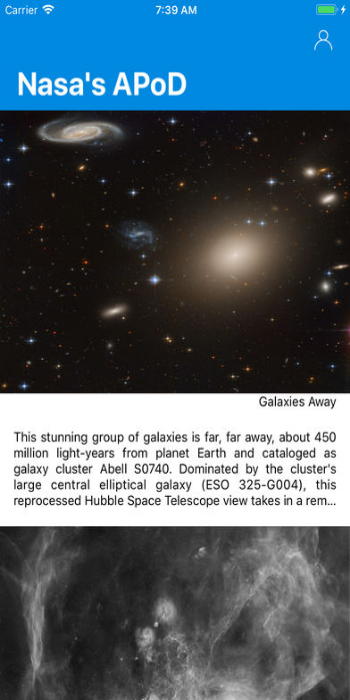

Astronomia do Dia
Daily Astronomy Pictures
Astronomy picture of the day. Using Nasa open API with beautiful pictures. You could save, share and customize your phone with those awesome photos. Explore now and the past posted photos.

Astronomia do DiaContact Us